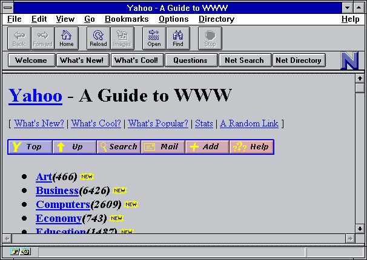

Web 1.0 was the first generation of the World Wide Web. It consisted primarily of static HTML pages served from web servers. Content was created and controlled by website owners; users could only read, not interact or contribute.
Characteristics of Web 1.0
- Static pages rather than dynamic HTML.
- Content provided from the server's filesystem rather than a relational database management system (RDBMS).
- Pages built using Server Side Includes or Common Gateway Interface (CGI) instead of a web application written in a dynamic programming language such as Perl, PHP, Python or Ruby.
- The use of HTML 3.2-era elements such as frames and tables to position and align elements on a page. These were often used in combination with spacer GIFs.
- Proprietary HTML extensions, such as the <"blink"> and <"marquee"> tags, introduced during the first browser war.
- Online guestbooks.
- GIF buttons, graphics (typically 88×31 pixels in size) promoting web browsers, operating systems, text editors and various other products.
- HTML forms sent via email. Support for server side scripting was rare on shared servers during this period. To provide a feedback mechanism for web site visitors, mailto forms were used.
Example of Web 1.0
